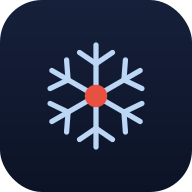

Pega el arreglo horario del pronóstico por municipios del SMN. Si algún campo tiene otro nombre, edítalo o usa el ejemplo.
Toca una barra de la línea de tiempo para ver por qué esa hora tuvo ese nivel.
Vela es un sistema experto de alerta temprana de heladas radiativas para huertos de manzana en la Sierra Norte de Puebla. A partir de temperatura, humedad, viento y nubosidad estima qué tan probable es que amanezca con helada, y qué tan fuerte.
Evalúa 20 reglas con factores de certeza al estilo MYCIN: cada regla aporta evidencia a favor (CF positivo) o en contra (CF negativo) de que habrá helada, y los CF se combinan con las fórmulas clásicas de MYCIN hasta un solo número entre −1 y +1. El punto de rocío se deriva con la fórmula de Magnus a partir de temperatura y humedad. Las reglas cubren el piso térmico (punto de rocío), condiciones habilitadoras (cielo despejado, viento en calma, aire seco), el momento del día, la ubicación del huerto, la temporada del año y, cuando el dato está disponible, probabilidad de lluvia, ráfagas y dirección del viento.
Tres formas, de más a menos automática:
Pronóstico del SMN (automático) — un robot en GitHub Actions descarga el pronóstico por hora de Huauchinango y lo publica cada hora; el botón "Cargar pronóstico del SMN" en la pestaña La noche lo trae desde el mismo sitio (sin problemas de CORS).
Pegar JSON del SMN — si copiaste a mano el pronóstico del sitio del SMN, lo pegas ahí y se analiza igual.
Entrada manual — en la pestaña Ahora, mueves los deslizadores con tus propias lecturas.
Es el mismo sistema experto: las 20 reglas y las fórmulas de CF y de Magnus son idénticas a las de la versión de escritorio en Python (dos motores de inferencia intercambiables —uno propio y uno sobre CLIPS— que sirven de validación cruzada entre sí). Vela reimplementa esa misma lógica en JavaScript para funcionar 100% en el navegador, sin backend y sin conexión.
MIT © Daniel Saucedo León